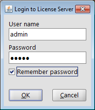
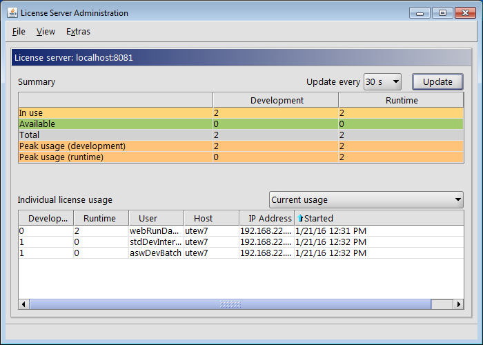
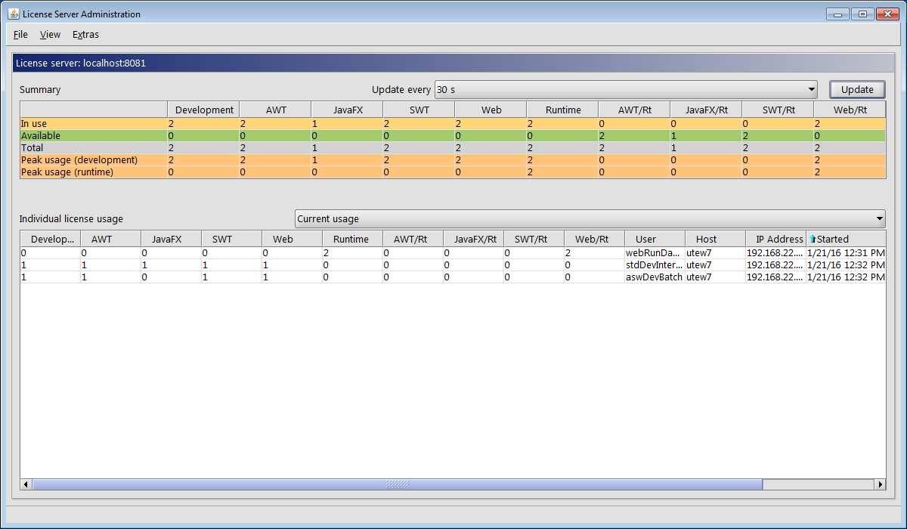
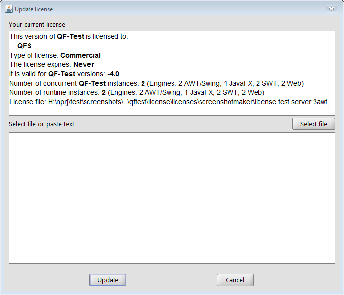
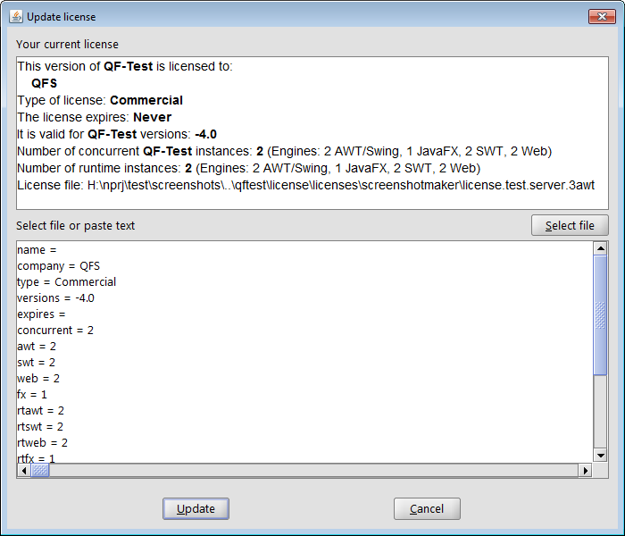
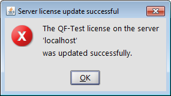

| Version 6.0.3 |
You can open the administration window in one of the two ways:
qftest
-licenseserver-admin
When the login dialog appears you can enter the user name (currently 'admin' only) and the password. Additionally you can check the box whether the password should be saved so that the login dialog will not appear again next time.
|
|  | ||
|
| Figure 4.1: Login dialog | ||
The administration windows consists of a menu bar, an overview and a table showing the individual current or peak license usage. You can configure the GUI to show a status line as well.
|
|  | ||
|
| Figure 4.2: Administration window | ||
You can activate or deactivate the menu item by clicking it. When »View«-»Show engines« is not ticked, i.e. deactivated, only the sums of the developer and runtime licenses are displayed.
When »View«-»Show engines« is ticked, the licenses shown in the overview and individual licenses tables are also listed per engine. This comes in handy when you have a server license valid for different numbers of licenses for the different types of engines. The image Current license usage with 'Show engines' activated at the beginning of the chapter Tables shows an example.
In the drop down list you can specify the interval (from 5 sec to 5 min) for requesting license usage data from the license server and an update of the display.
requests the current license usage from the license server and updates the display.
Above the table Individual license usage you will find a drop down list, where you can choose which data the table should display.
|
|  | ||
|
| Figure 4.3: Current license usage with 'Show engines' activated | ||
This table row shows the number of development and runtime licenses currently available, including engine information if the menu option is set accordingly.
The image above shows an example with two developer licenses, one of which is assigned to a QF-Test client making use of all the engines availabe and the other to a QF-Test client using all engines except Java FX. The license structure of the example allows only one instance of QF-Test to work with a Java FX engine. The license structure for the runtime licenses is the same. However, the two runtime licenses are used by a daemon running two QF-Test instances using only the web engine.
You can specify the kind of individual license data shown by selecting the respective option from the drop-down list Individual license data above the table. The table columns provide the following information:
Number of development licenses used for the respective engine by the QF-Test client.
You can show / hide these columns via the menu item »View«-»Show engines«.
Number of runtime licenses used for the respective engine by the QF-Test client.
You can show / hide these columns via the menu item »View«-»Show engines«.
The server license can be updated interactively via the administration window. This is done by selecting »Extras«-»Update server license«. The following dialog appears:
|
|  | ||
|
| Figure 4.4: Update dialog | ||
The top part of the dialog shows the server license currently in use.
In the bottom text field you can either paste the text of the license provided by Quality First Software GmbH or enter it automatically by selecting the license (update) file via the "Select file" button.
|
|  | ||
|
| Figure 4.5: Update dialog with new license | ||
When the license data has been entered into the bottom text field you can press the "Update" button. A message will come up informing you that the license update was successful.
The license server is updated while it is running. It does not have to be restarted for the new license to become active. QF-Test clients already connected are not affected by the license update. Newly started clients will run with the updated license.
|
|  | ||
|
| Figure 4.6: License update confirmation | ||
The old license file gets backed up with the ending '.old' before the update is
performed. The new license data are written to the current license file specified
via -license <file>.
After the update the license update file provided by Quality First Software GmbH is no longer needed.
| Last update: 9/6/2022 Copyright © 2014-2022 Quality First Software GmbH |